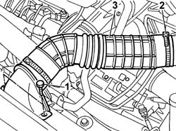
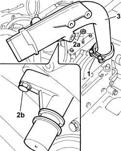
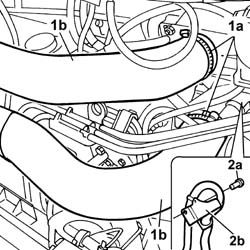
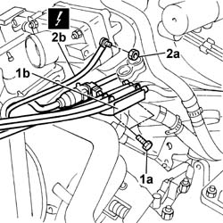
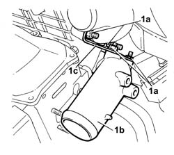

1048B10 RIGID AIR DELIVERY PIPE BETWEEN TURBO CHARGER AND HEAT EXCHANGER - R + R
- Path
- Procedures > 10 ENGINE UNIT > 1048 ENGINE AIR SUPPLY CIRCUIT > 1048B PRESSURE AIR CIRCUIT > 1048B10 RIGID AIR DELIVERY PIPE BETWEEN TURBO CHARGER AND HEAT EXCHANGER - R + R
- Kind
- repair procedure (removal / refitting; the operation number is the code)
- Applies to
- engines: 2.3 JTD 16V, 2.8 JTD 8V; all production periods
- Interactive page
- https://sloeber94.github.io/elrnDB-fDct/en/#/244000795
Applies to: engines: 2.3 JTD 16V; all production periods
 Removing
Removing
 Refitting
RefittingSee in Op. 1048B14
1. Undo the bolts fixing the cold air intake to the headlamp holder crossmember.
2. Disconnect the intake hose from the air filter casing.
3. Remove the cold intake and intake hose assembly from the engine compartment.

Applies to: engines: 2.3 JTD 16V; all production periods
1. Loosen the bolt fixing the collar joining the rigid section of the intake pipe to the turbocharger.
2. Undo the nuts (2a) fixing the pipe to the bracket on the cylinder head and the bolt (2b) fixing the connector for the engine oil vapour pipe.
3. Remove the rigid pipe for the air supply pipe from the turbocharger to the heat exchanger.

Applies to: engines: 2.3 JTD 16V; all production periods
- Fit the rigid pipe for the air supply pipe from the turbocharger to the heat exchanger.
- Tighten the bolts fixing the collar to the turbocharger.
- Tighten the bolts fixing it to the cylinder head.
- Tighten the bolt fixing the engine oil vapour pipe.
- Fit the cold intake and intake hose assembly in the engine compartment.
- Connect the intake hose to the air filter casing.
- Tighten the bolts fixing the cold air intake to the headlamp holder crossmember.
See in Op. 1048B14
Applies to: engines: 2.8 JTD 8V; all production periods
Removing
Refitting1. Open the retaining bands (1a) and release the hoses on the intake manifold and on the rigid pipe (1b).
2. Undo the bolts (2a) and move the oil vapour pipe mounting bracket (2b) aside.

Applies to: engines: 2.8 JTD 8V; all production periods
1. Undo the fixing bolts (1a) and move the fuel pipe mounting bracket (1b) aside.
 | Description | Connector |
|---|---|---|
2b | Heat flange earth | C090 |
2. Undo the fixing nut (2a) and disconnect the earth lead on the heat flange (2b).

Applies to: engines: 2.8 JTD 8V; all production periods
1. Undo the fixing nuts (1a) and remove the rigid pipe (1b) complete with bracket (1c).

Applies to: engines: 2.8 JTD 8V; all production periods
Refitting
Removing- Fit the rigid pipe in place complete with bracket.
- Tighten the fixing nuts.
- Connect the earth lead to the heat flange.
- Fit the fuel pipe bracket.
- Fit the oil vapour pipe mounting bracket.
- Fit the hoses on the intake manifold and on the rigid pipe.